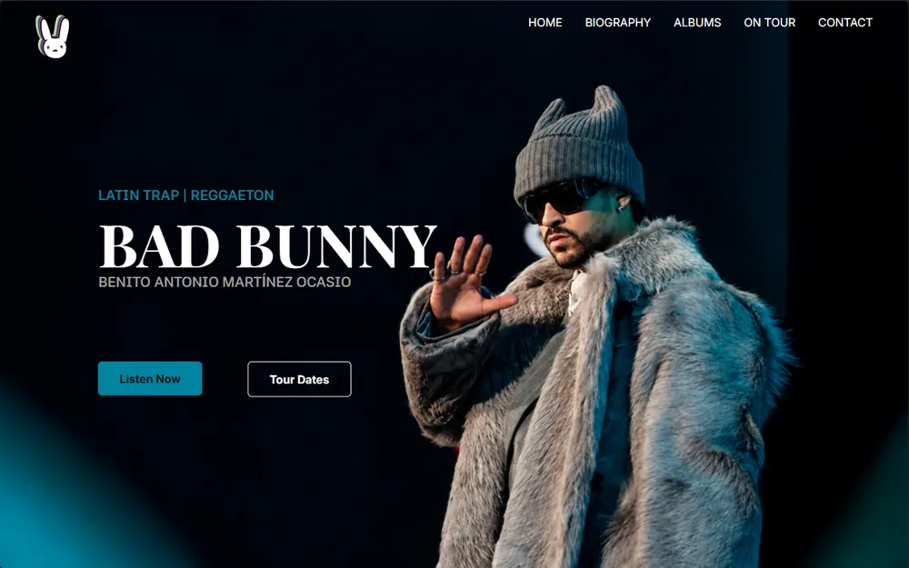

Proyectos
Tres proyectos hechos de principio a fin. En cada uno cuento qué problema resuelve y cómo lo hice.

Proyecto propio
Dashboard personal
Web app privada para mis finanzas, mi plan de estudio semanal y mi correo. Sin frameworks, con Supabase y un modelo de IA de Groq por detrás.
- Tecnologías
- JavaScript, Supabase, PostgreSQL, Groq y Vercel
- Estado
- Publicado y en uso cada día

Trabajo de clase
Portfolio de un artista
Práctica de Diseño de Interfaces Web. Primero hice el mockup en Figma y luego lo pasé a código, intentando que se viera igual que el diseño.
- Tecnologías
- HTML, CSS y Figma
- Reglas
- Sin JavaScript y sin grid
DevNotes
HTML13
CSS17
JavaScript20
PHP21
Docker7
Conceptos8
Proyecto propio
DevNotes
Mis apuntes de desarrollo web: 86 notas organizadas por lenguaje, escritas en Obsidian y publicadas en GitHub para tenerlas siempre a mano.
- Tecnologías
- Markdown, Obsidian y Git
- Contenido
- 86 notas en 6 bloques